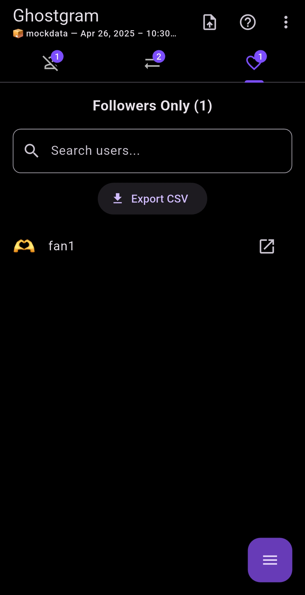
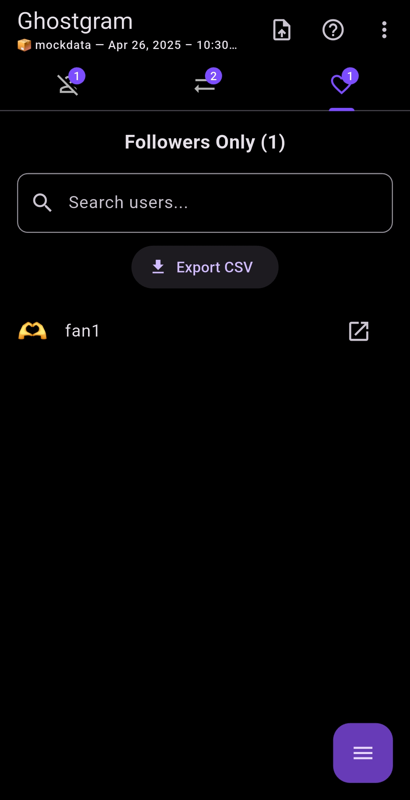

Ghostgram
Track who’s not following you back on Instagram — 100% offline and private. No login. No risk.
Ghostgram is a private, offline Instagram followers analyzer. Easily find out who unfollowed you on Instagram, spot mutuals, discover fans, and track changes over time — no login, no ads, just pure insights from your Instagram ZIP.
Key Features
- See who’s not following you back on Instagram
- Find mutual followers and discover hidden fans
- Compare data snapshots to detect unfollowers over time
- Track which profiles you’ve visited and starred
- Export all your insights into clean CSV files
- Fully offline — your Instagram data stays on your device
How It Works
- Request your Instagram data export (followers and following only)
- Download the ZIP file and open Ghostgram
- Upload the ZIP — no Instagram login needed
- Instantly view your stats, compare timelines, and export insights


 
